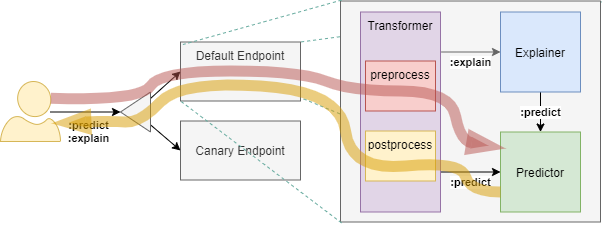

KFServing
Kubeflow Serving Solution
- KFServing이란
- 1. InferenceService
- 2. InferenceService 구성요소
- 3. InferenceService 배포
- 4. InferenceService 구성요소 유형
- 5. KFServing Python SDK
- 참고1: TensorFlow Model을 Save하는 방법
- 참고2: Seldon Core Inference Graph(Pipeline)
KFServing이란
- Kubernetes Custom Resource Definition(CRD) 으로 제공되는 ML Serving 아키텍처
- Serverless로 동작 (내부적으로 Knative 사용)

1. InferenceService

- KFServing의 배포/서비스 단위 (CRD)
- api는 Tensorflow V1 HTTP API를 따름 (Out-of-the-box의 경우)
- Ensembling, A/B testing, Multi-Arm-Bandits 등은 InferenceService를 조합하여 구현해야함 (단일 InferenceService로는 불가능)
- Seldon Core와 비교됨 (참고2)
2. InferenceService 구성요소
2.1 Predictor
- 필수
- REST API path의 postfix가
:predict - trained model의 serving을 수행
- storage에 저장된 trained model을 load하여 서비스
- 지원하는 storage provider
- Google Cloud Storage
gs:// - S3 Compatible Object Storage
s3:// - Azure Blob Storage
https:// - Local filesystem
file:// - Persistent Volume Claim (PVC)
pvc://
- Google Cloud Storage
- 지원하는 storage provider
- trained model은 프로비저닝되어 제공되는 이미지(framework)에 따름
- 제공되는 이미지 프로비저닝 - kfserving/docs/apis/v1beta1 at kubeflow/kfserving (github.com)
- tensorflow
- tensorrt
- xgboost
- sklearn
- onnx
- pytorch
- 제공되는 이미지 프로비저닝 - kfserving/docs/apis/v1beta1 at kubeflow/kfserving (github.com)
- storage에 저장된 trained model을 load하여 서비스
2.2 Transformer
- 필수아님
- prediction 또는 explanation의 실행 전/후에 수행될 로직을 탑재 (preprocess/postprocess) → 전처리 / 후처리 용도
- Interceptioon Filter로서 동작 
2.3 Explainer
- 필수아님
- REST API path의 postfix가
:explain - 제공되는 이미지 프로비저닝
3. InferenceService 배포
-
방법1: kubectl
kubectl apply -f xxxxx.yaml -
방법2: Kubeflow Pipelines (Sample)
-
방법3: KFServing Python SDK (Sample)
4. InferenceService 구성요소 유형
- 역할에 따른 구분
- Predictor
- Transformer
- Explainer
- 이미지 프로비저닝 여부에 따른 구분
- Out-of-the-box ← 프로비저닝된 이미지 사용
- Custom
4.1 Out-of-the-box Predictor
- 프로비저닝 이미지를 사용
- 프로비저닝할 프레임워크(예: tensorflow, pytorch) 명시 필요 (이미지에 대한 기술 X)
- 모델이 저장된 위치 필요 (storageUri)
4.1.1 tensorflow 예제
4.1.1.1 manifests: tensorflow.yaml
apiVersion: "serving.kubeflow.org/v1beta1"
kind: "InferenceService"
metadata:
name: "flowers-sample"
spec:
default:
predictor:
tensorflow:
storageUri: "gs://kfserving-samples/models/tensorflow/flowers"
4.1.2 pytorch 예제
4.1.2.1 manifests: pytorch.yaml
apiVersion: "serving.kubeflow.org/v1alpha2"
kind: "InferenceService"
metadata:
name: "pytorch-cifar10"
spec:
default:
predictor:
pytorch:
storageUri: "gs://kfserving-samples/models/pytorch/cifar10/"
modelClassName: "Net"
4.2 Custom Predictor
- 프로비저닝 이미지를 사용하지 않고 Custom 이미지를 사용
4.2.1 Flask Hello World 예제
4.2.1.1 manifests: custom.yaml
apiVersion: serving.kubeflow.org/v1alpha2
kind: InferenceService
metadata:
labels:
controller-tools.k8s.io: "1.0"
name: custom-sample
spec:
default:
predictor:
custom:
container:
image: sds.redii.net/sample/custom-sample
env:
- name: GREETING_TARGET
value: "Python KFServing Sample"
4.2.1.2 Dockerfile
# ... 선략 ...
COPY app.py requirements.txt ./
# ... 생략 ...
CMD exec gunicorn --bind :$PORT --workers 1 --threads 8 app:app
4.2.1.3 application: app.py
import os
from flask import Flask
app = Flask(__name__)
@app.route('/v1/models/custom-sample:predict')
def hello_world():
greeting_target = os.environ.get('GREETING_TARGET', 'World')
return 'Hello {}!\n'.format(greeting_target)
if __name__ == "__main__":
app.run(debug=True, host='0.0.0.0', port=int(os.environ.get('PORT', 8080)))
4.2.2 kfserving-custom-model 예제
4.2.2.1 manifests: custom.yaml
apiVersion: serving.kubeflow.org/v1alpha2
kind: InferenceService
metadata:
labels:
controller-tools.k8s.io: "1.0"
name: kfserving-custom-model
spec:
default:
predictor:
custom:
container:
image: {username}/kfserving-custom-model
4.2.2.2 Dockerfile
# ... 선략 ...
COPY model.py imagenet_classes.txt ./
CMD ["python", "model.py"]
4.2.2.3 application: model.py
- kfserving.KFModel을 상속받고 load()와 predict()를 구현함
- load()를 미리 호출하여 model을 restore한 후, 서버를 start()
import kfserving
from typing import List, Dict
class KFServingSampleModel(kfserving.KFModel):
def __init__(self, name: str):
super().__init__(name)
self.name = name
self.ready = False
def load(self):
# model load 코드 생략
self.model = model
self.ready = True
def predict(self, request: Dict) -> Dict:
inputs = request["instances"]
# predict 코드 생략
return {"predictions": results}
if __name__ == "__main__":
model = KFServingSampleModel("kfserving-custom-model")
model.load()
kfserving.KFServer(workers=1).start([model])
4.3 Transformer
4.3.1 Image Transformer with PyTorch Predictor 예제
4.3.1.1 manifests: image_transformer.yaml
apiVersion: serving.kubeflow.org/v1alpha2
kind: InferenceService
metadata:
name: transformer-cifar10
spec:
default:
transformer:
custom:
container:
image: gcr.io/kubeflow-ci/kfserving/image-transformer:latest
name: user-container
predictor:
pytorch:
modelClassName: Net
storageUri: gs://kfserving-samples/models/pytorch/cifar10
4.3.1.2 Dockerfile
# ... 선략 ...
ENTRYPOINT ["python", "-m", "image_transformer"]
4.3.1.3 application: image_transformer.py
- kfserving.KFModel을 상속받고 preprocess()와 postprocess()를 구현함
def image_transform(instance):
...생략...
return res.tolist()
class ImageTransformer(kfserving.KFModel):
def __init__(self, name: str, predictor_host: str):
super().__init__(name)
self.predictor_host = predictor_host
def preprocess(self, inputs: Dict) -> Dict:
return {'instances': [image_transform(instance) for instance in inputs['instances']]}
def postprocess(self, inputs: List) -> List:
return inputs
if __name__ == "__main__":
transformer = ImageTransformer(args.model_name, predictor_host=args.predictor_host)
kfserver = kfserving.KFServer()
kfserver.start(models=[transformer])
5. KFServing Python SDK
5.1 Model / Server
- “4.2 Custom Predictor / 4.2.2 kfserving-custom-model 예제” 및 “4.3 Transformer” 참조
5.2 Client
- “3. InferenceService 배포 / 방법3: KFServing Python SDK (Sample)” 참조
참고1: TensorFlow Model을 Save하는 방법
체크포인트
- training 중간과 training 마지막에 체크포인트(checkpoint)를 저장
- 다시 training 하지 않고 모델을 재사용하거나
- training 과정이 중지된 경우 이어서 training을 진행 가능
-
.ckpt파일- 모델의 가중치를 포함하는 하나 이상의 샤드(shard)
- 가중치가 어느 샤드에 저장되어 있는지를 나타내는 인덱스 파일
- 모델 전체를 저장하지 않음 → 모델 구조는 저장하지 않음
HDF5 (Hierarchical Data Format)
- 모델 전체를 저장
-
.h5또는.hdf5파일- 가중치 값
- 모델 설정(구조)
- 옵티마이저 설정
TensorFlow SavedModel
- language-neutral format to save machine-learned models → Tensorflow Serving 등에서 사용
- 모델 전체를 저장
- Ref: https://github.com/tensorflow/tensorflow/tree/master/tensorflow/python/saved_model#tensorflow-savedmodel
- 저장 예제 코드
export_dir = ...
...
builder = tf.saved_model.builder.SavedModelBuilder(export_dir)
with tf.Session(graph=tf.Graph()) as sess:
...
builder.add_meta_graph_and_variables(sess,
[tf.saved_model.tag_constants.TRAINING],
signature_def_map=foo_signatures,
assets_collection=foo_assets)
...
with tf.Session(graph=tf.Graph()) as sess:
...
builder.add_meta_graph(["bar-tag", "baz-tag"])
...
builder.save()
-
SignatureDef로 다음 항목을 정의
- method_name
- inputs: 입력 tensor의 이름, dtype, shape을 정의
- outpus: 출력 tensor의 이름, dtype, shape을 정의
- 다음과 같은 구조로 모델이 저장됨
assets/
assets.extra/
variables/
variables.data-?????-of-?????
variables.index
saved_model.pb
참고2: Seldon Core Inference Graph(Pipeline)